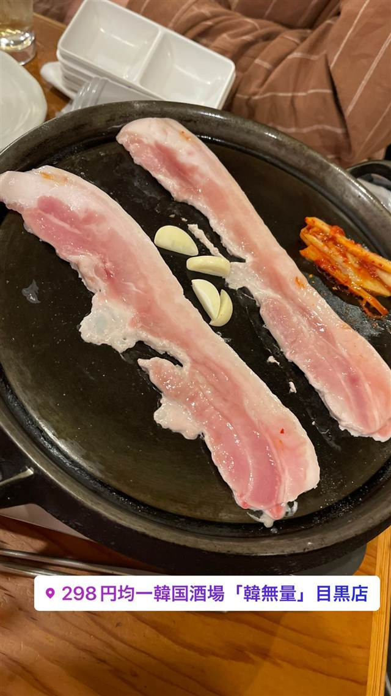

エスニック・各国料理 · 韓国 · 新大久保
くるむ サンパ店
15種の野菜で牛肉を包んで食べるサムギョプサル
くるむ サンパ店
15種類の野菜で肉を「くるんで」食べるヘルシー韓国焼肉店。2013年オープンで、新大久保では珍しい牛肉のサムギョプサルが名物。
TRIVIA
へえ、という話
- 店名の「くるむ」の通り、15種の野菜で肉を包んで食べるのが名物
- 新大久保では珍しい牛肉のサムギョプサルが味わえる
| 創業 | 2013年4月18日オープン。 |
|---|---|
| 看板 | 15種類の野菜で包んで食べる韓国焼肉、牛のサムギョプサル |
| こだわり | 韓国から仕入れる新鮮な野菜を含む15種の野菜と、国産では珍しい牛肉のサムギョプサルを組み合わせ、ヘルシーに肉を野菜で「くるんで」食べるスタイル。 |
| 定休日 | 年末年始 |
| 予約 | 予約可（ディナーのみ、ランチ不可） |
| 場所 | 新大久保 東京都新宿区百人町 |
| 注意 | 新大久保駅から徒歩4分。姉妹店に「わら火」がある。 |
食べたもの：サンチュ野菜
NEARBY
近い店・同じ系統の店
-
 韓国 ホノルル
Yu Chun Korean Restaurant
韓国産の葛粉と24時間仕込みの氷のように冷たい冷麺
韓国 ホノルル
Yu Chun Korean Restaurant
韓国産の葛粉と24時間仕込みの氷のように冷たい冷麺
-
 韓国 恵比寿駅
ソナム 恵比寿店
独自仕入れの食材で作るキムチと看板カムジャタン
昼 ¥1,000～¥1,999 夜 ¥5,000～¥5,999
韓国 恵比寿駅
ソナム 恵比寿店
独自仕入れの食材で作るキムチと看板カムジャタン
昼 ¥1,000～¥1,999 夜 ¥5,000～¥5,999
-
 韓国 広尾
胡同 西麻布店（フートン）
西麻布の裏路地で30年、名物はねぎタン塩とカムジャタン鍋
夜 ¥4,000～¥4,999
韓国 広尾
胡同 西麻布店（フートン）
西麻布の裏路地で30年、名物はねぎタン塩とカムジャタン鍋
夜 ¥4,000～¥4,999
-

韓国 目黒駅（東口） 韓無量 目黒店 サムギョプサルもチーズタッカルビも全品298円均一の韓国酒場 夜 ¥1,000～¥1,999 -
 カフェ 新大久保
カイサルカフェ（CAESAR Cafe）
推しのマグカップを選ぶと無料でラテアートしてくれる韓流カフェ
昼 ～¥999 夜 ～¥999
カフェ 新大久保
カイサルカフェ（CAESAR Cafe）
推しのマグカップを選ぶと無料でラテアートしてくれる韓流カフェ
昼 ～¥999 夜 ～¥999
-
 居酒屋 新大久保駅
人生酒場 新大久保店
ネオン輝く韓国風の内装でチヂミとマッコリ
夜 ¥3,000～¥3,999
居酒屋 新大久保駅
人生酒場 新大久保店
ネオン輝く韓国風の内装でチヂミとマッコリ
夜 ¥3,000～¥3,999